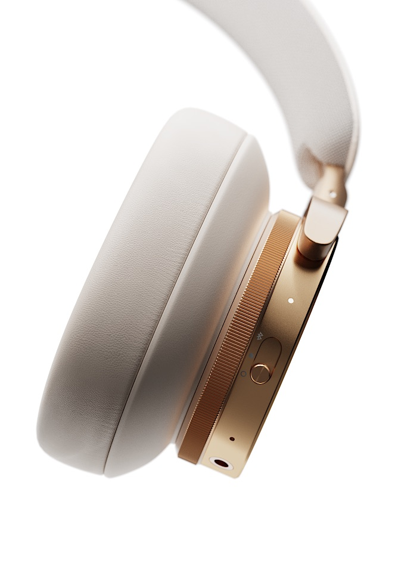
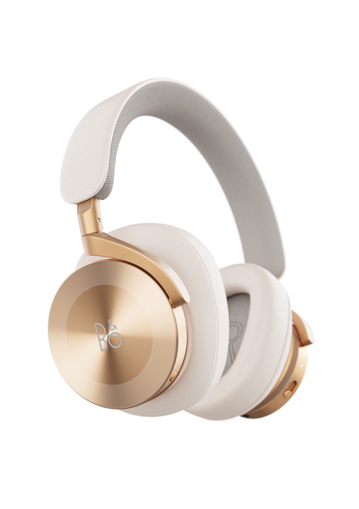
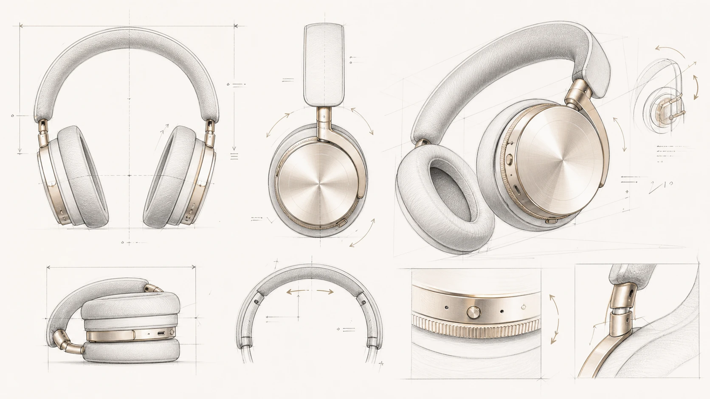
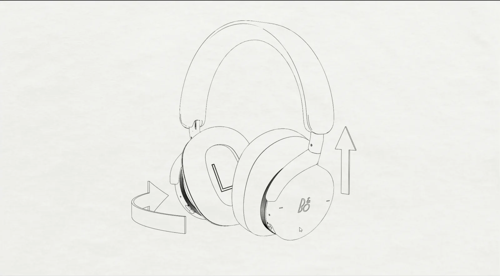
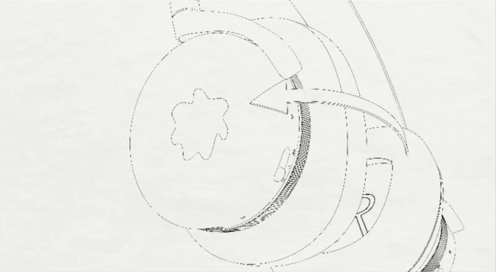
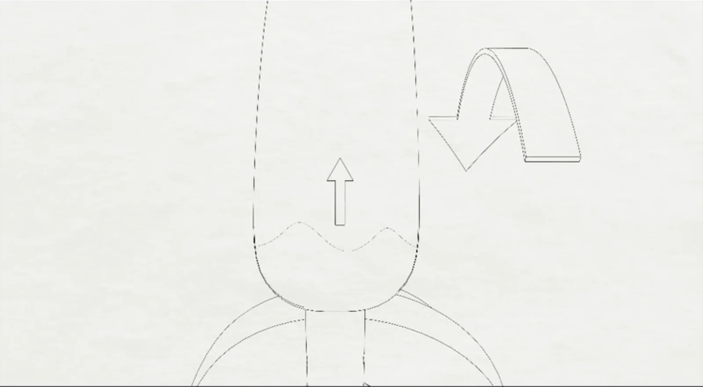
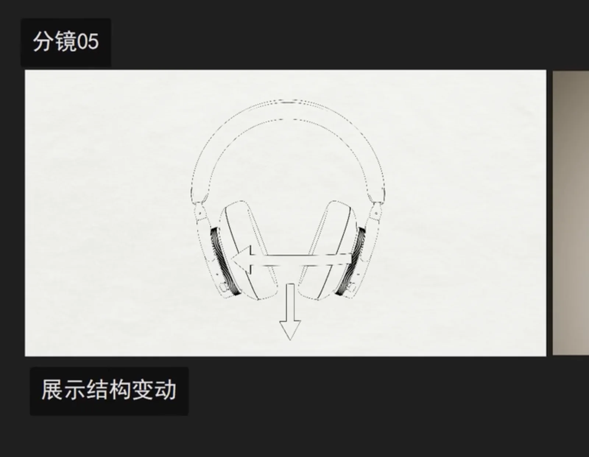
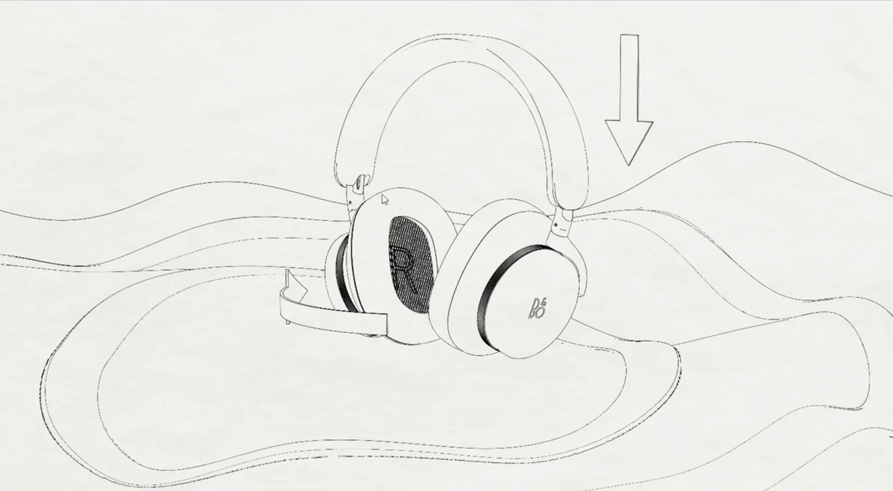

Precision, Danish design, and craft.
These pillars became criteria for motion, composition, and material treatment.
Official brand context ↗03 / B2C Product Visualization
Beoplay H95 / Self-Initiated Launch Study
I developed a feature-led CGI launch film translating the H95’s material craft, physical controls, and foldable architecture into a premium consumer story.

Final Outcome / Launch Film
Individual CGI and motion study / 22 seconds.
01 / Context & Opportunity
These pillars became criteria for motion, composition, and material treatment.
Official brand context ↗Visible engineering and premium CMF offered the strongest launch-story opportunities.
Official product page ↗The film had to make those benefits imaginable before first use.
Official control guide ↗Communication GoalTurn material craft and physical interaction into a clear reason to desire the product.
02 / Feature-to-Benefit Strategy
Conceptual proposition / not official brand copyControlled immersion, crafted in every detail.
Selected CGI Details


03 / Creative Direction
Warm Golden Tone highlights meet dark graphite structure. Reflections reveal material; movement clarifies experience.
Silhouettes establish recognition; close-ups reveal tactility.
Rotation and folding explain function; slower moments add weight.

AI-Assisted Asset / Transparent Use
I used my original CGI render to guide an AI-generated supporting sketch sheet, then selected and integrated the final result. The product CGI, lighting, animation, and edit remain my authored work.
04 / Storyboard & Motion
Storyboard → Final Motion





05 / Contribution Workflow
Look development built for tactile recognition.
Planned reveals, orbits, and transformation.
Shaped the film and channel-ready story.
06 / Social Applications
07 / Reflection & Credits
Art direction, look development, animation, rendering, edit, and case-study design.
Independent study; not commissioned by or affiliated with Bang & Olufsen.
Base model: 3DSKY Decor Helper ↗ (original modeling not claimed). Music: HitsLab / Ievgen Poltavskyi via Pixabay ↗.